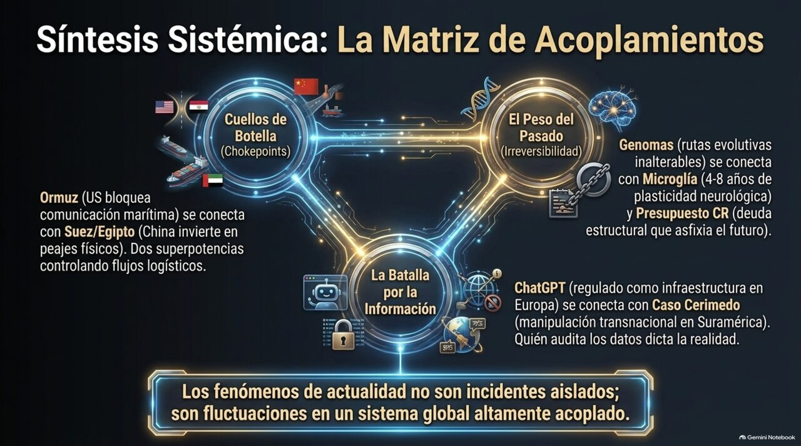
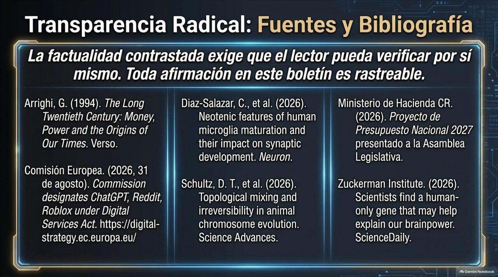
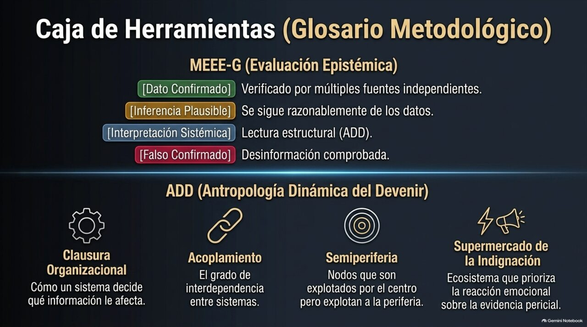
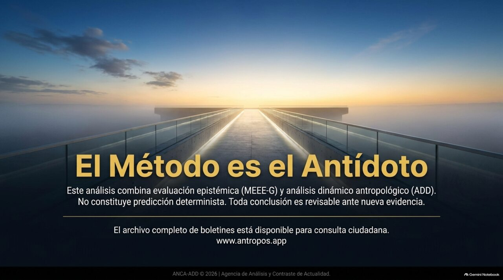

EE.UU. RETOMA ATAQUES CONTRA IRÁN Y EL BRENT SALTA MÁS DE 5 % HASTA EL ENTORNO DE USD 95 ///
BESSENT ANUNCIA EL «DÍA D ECONÓMICO»: NUEVA TANDA DE SANCIONES Y AVISO A NAVIERAS ///
XI JINPING LLEGA A EL CAIRO EN SU PRIMERA VISITA DE ESTADO EN DIEZ AÑOS ///
5.821 GENOMAS ANIMALES REVELAN «AUTOPISTAS EVOLUTIVAS» IRREVERSIBLES (SCIENCE ADVANCES) ///
LA MICROGLÍA HUMANA TARDA DE 4 A 8 AÑOS EN MADURAR: NEOTENIA Y EL GEN SRGAP2 ///
BRUSELAS DESIGNA A CHATGPT «MOTOR DE BÚSQUEDA MUY GRANDE» BAJO EL DSA ///
COSTA RICA: PRESUPUESTO 2027 POR ¢12,4 BILLONES, 38 % FINANCIADO CON DEUDA ///
DIPUTADA DOBLES PREGUNTA POR EL «REGISTRO DE OPOSITORES»; TENSIÓN POR VIOLENCIA POLÍTICA ///
CASO CERIMEDO: SEGUNDA PRISIÓN PREVENTIVA Y EQUIPOS AÚN SIN PERITAJE PÚBLICO ///
ANCA-ADD · MEEE-G · ADD · SISTEMAS-MUNDO ///
26 de agosto – 2 de setiembre de 2026
Cierre editorial: miércoles 2 · IX · 2026
08:39 · San José, Costa Rica
antropos.app
antropos-amf.github.io
Boletín Semanal N.° 015 · El cerco (Ormuz) y el censo (registro de opositores en Costa Rica).
Escuche el análisis en audio
Resumen en formato podcast de esta edición — dos analistas de IA desempacan la irreversibilidad como hilo conductor entre el caso Cerimedo, Ormuz, Egipto, la genómica evolutiva, la neotenia cerebral y el presupuesto costarricense.
Dos operaciones de delimitación organizan la semana. Una es material y ocurre en el agua: Estados Unidos reanudó ataques contra objetivos iraníes el 1.º de setiembre, mantiene un bloqueo naval y advirtió que sancionará incluso a las navieras que se limiten a responder solicitudes de información de las autoridades que Irán creó para administrar el estrecho de Ormuz. El cerco ya no consiste solo en impedir el paso, sino en volver punible el gesto administrativo de reconocer a la otra parte. El Brent respondió con un salto superior al 5 % hasta el entorno de USD 95 por barril.
La otra es informacional y ocurre en registros: en Costa Rica, la diputada Claudia Dobles preguntó públicamente para qué el Ejecutivo mantiene identificadas a personas opositoras, después de que el ministro de Justicia y el secretario general del partido de gobierno aludieran a esa práctica. La pregunta llegó en la misma semana en que el Ejecutivo presentó un presupuesto para 2027 de ¢12,4 billones —millones de millones— con un recorte de ¢10.000 millones al Poder Judicial y la propuesta de congelar ¢30.000 millones más.
Una tercera nota de política —la séptima— cierra el arco por donde no se esperaba. En Bolivia, el consultor argentino Fernando Cerimedo está preso con dos detenciones preventivas simultáneas y tres causas abiertas, y la Fiscalía dice haber incautado en su domicilio una «mini granja de bots». La caracterización aún no tiene peritaje público, no se han divulgado imágenes, y la defensa afirma que el equipamiento eran teléfonos satelitales y módems. Mientras tanto, ya circulan videos falsos que dicen mostrar esa granja. El caso es importante precisamente por eso: es una noticia sobre manipulación informacional que está siendo procesada, en tiempo real, mediante manipulación informacional.
Las dos ciencias de esta edición ofrecen, sin buscarlo, el contrapunto conceptual. Un estudio de la Universidad de Viena que compara 5.821 genomas revela que la evolución cromosómica animal transita por «autopistas» irreversibles: hay fusiones que no se deshacen. Y un trabajo de Columbia muestra que la microglía humana tarda de cuatro a ocho años en madurar, frente a tres semanas en el ratón. Irreversibilidad y lentitud: dos propiedades que la ADD trata como constitutivas de cualquier sistema que se reproduce en el tiempo, y que aquí aparecen medidas en el laboratorio, no supuestas por analogía.
POLÍTICA Y GEOPOLÍTICA
El cerco administrativo: Washington sanciona el reconocimiento de la autoridad iraní sobre Ormuz
Reanudación de ataques el 1.º de setiembre · Brent en el entorno de USD 95 · «Día D económico» del Tesoro
El estrecho de Ormuz: cuando responder un correo de la autoridad iraní se vuelve, para Washington, motivo de sanción.
Hechos verificados
El 24 de agosto, el secretario del Tesoro, Scott Bessent, anunció desde el Departamento del Tesoro una nueva tanda de sanciones contra Irán, presentada por él mismo como un «Día D económico». [DC]
La Oficina de Control de Activos Extranjeros (OFAC) ya había advertido que quien pagara peajes a Irán por el paso del estrecho arriesgaba sanciones; un aviso posterior extendió ese riesgo a marineros y empresas navieras que simplemente respondan a solicitudes de información de los organismos creados por Irán para gestionar Ormuz. [DC]
Irán constituyó la Autoridad del Estrecho del Golfo Pérsico (PGSA) para cobrar tasas de tránsito; Estados Unidos la sancionó. Teherán advirtió que los buques que infrinjan sus normas de tránsito pueden ser detenidos o confiscados. [DC]
El tráfico marítimo por el estrecho se mantiene bajo. Trump ha sostenido reiteradamente que Estados Unidos tiene «control total» del estrecho y que las minas fueron retiradas o detonadas; los datos de tránsito de buques no confirman una normalización. [DC] para las declaraciones y para el bajo tráfico; la equivalencia entre ambas cosas es lo que está en disputa.
El 1.º de setiembre se registraron nuevos ataques estadounidenses contra objetivos iraníes. El Brent subió más de 5 % en la sesión, hasta el entorno de USD 94–96 por barril, máximo de aproximadamente seis semanas. [DC]
Contexto
La guerra comenzó el 28 de febrero de 2026. Irán cerró de facto el estrecho tras el ataque inicial de Estados Unidos e Israel. Desde entonces el conflicto ha alternado ultimátums, treguas parciales, un memorando de 14 puntos firmado en junio, la ruptura de esa tregua y la reimposición de sanciones. Las conversaciones directas Estados Unidos–Irán han sido negadas repetidamente por Teherán; el canal que sí ha operado es el bilateral con Omán, que negocia rutas marítimas sin que ello implique reapertura del estrecho.
Lo nuevo de esta semana no es el bloqueo físico —que lleva medio año— sino su extensión al plano informacional y administrativo. La sanción ya no castiga el pago del peaje: castiga contestar un correo de la PGSA. Es una disputa por quién tiene la potestad de ser reconocido como autoridad legítima sobre una vía de agua.
Análisis epistémico (MEEE-G)
Afirmación
Base / proceso generador
Estatus
Hubo nuevos ataques de EE.UU. contra Irán el 1.º de setiembre
Reportes de mercado y de agencias coincidentes; reacción de precios verificable en ICE
[DC]
El Brent cerró la semana en el entorno de USD 94–96
Fuentes de cotización divergen dentro de ese rango según hora de corte y contrato; ver «discrepancia declarada» abajo
[DC] con rango
Estados Unidos tiene «control total» del estrecho
Declaración presidencial reiterada; no corroborada por datos de tránsito
[Opinión/creencia]
La extensión de sanciones a la mera respuesta informativa busca deslegitimar a la PGSA como autoridad
Inferencia a partir del texto del aviso de OFAC y del blanco elegido
[IP]
El acuerdo Irán–Omán sobre rutas es un preludio de reapertura del estrecho
Negado explícitamente por el viceministro Gharibabadi; sin evidencia adicional
[C]
La prima de riesgo marítimo, y no el volumen físico, explica el grueso del precio actual
Hipótesis contrastable con datos de seguros y fletes, aún no reunidos aquí
[H]
Discrepancia declarada. Las cotizaciones del Brent para el 1–2 de setiembre difieren entre fuentes: una serie histórica de futuros registra cierres de 91,57 (1 sep) y 95,51 (2 sep); otro proveedor da 95,22 el 1 de setiembre a las 23:00 UTC+2; un tercero, 94,86 el 2 de setiembre. La divergencia se explica por contrato, hora de corte y si se cita futuro o contrato por diferencia. No se elige arbitrariamente entre ellas: se declara el rango USD 94–96 y se advierte que el dato de un solo proveedor no debe citarse como cifra puntual.
LECTURA DINÁMICA · ADD — Nivel comunicativo-institucional y normativo-plural
Tipo de analogía declarada: fuerte. Parámetro de control identificado: el reconocimiento de autoridad efectiva sobre el tránsito, medido operativamente por la disposición de terceros —navieras, aseguradoras, Estados ribereños— a interactuar con la PGSA.
Lo que se está disputando no es un flujo, sino la clausura organizacional de un sistema: qué instancia define internamente qué cuenta como tránsito legítimo. Ambas partes intentan constituirse como el sistema que procesa esa distinción, y cada una convierte el reconocimiento de la otra en una perturbación sancionable. En términos habermasianos, es colonización recíproca: dos lógicas sistémicas —poder militar y poder financiero-sancionatorio— penetran el dominio de la coordinación marítima, que históricamente se reproducía por acuerdo técnico (la ruta establecida por la Organización Marítima Internacional desde 1968).
Régimen: turbulento con oscilación de alta frecuencia. El sistema no está en bifurcación: no hay señal de que se aproxime a un umbral de reorganización cualitativa. Está atrapado en un atractor de escalada-desescalada de amplitud decreciente en lo diplomático y creciente en lo económico. [Int]
CAPA SISTEMAS-MUNDO · Wallerstein / Arrighi
El cierre de un cuello de botella logístico por medios militares, sostenido durante seis meses sin resolución, es el tipo de fenómeno que Arrighi asocia a la fase de expansión financiera de un ciclo hegemónico: la potencia central compensa la erosión de su capacidad de ordenar mediante el uso intensivo de su control sobre la infraestructura financiera —el sistema de sanciones— antes que sobre la infraestructura productiva.
La extensión de la sanción al acto informativo es notable en esa lectura: no regula el comercio, regula la comunicación entre agentes privados y una autoridad rival. Es una forma de cuasi-monopolio sobre el reconocimiento institucional, análoga al que Wallerstein describía sobre mercancías estratégicas, pero aplicada a la legitimidad. [Int]
Límite temporal del marco declarado: los ciclos sistémicos de Arrighi operan en escalas seculares. Una semana no es evidencia de transición hegemónica; es, a lo sumo, un dato compatible con una hipótesis de escala mayor.
RELEVANCIA PARA COSTA RICA
Energética y fiscal. Costa Rica importa la totalidad de sus combustibles fósiles. Un Brent sostenido cerca de USD 95, frente a los USD 68 de hace un año, se traslada al costo de generación térmica de respaldo, al transporte de carga y al índice de precios. La confirmación de que la planta térmica Moín IV del ICE operará hasta 2030 aumenta la exposición del sistema eléctrico nacional a este precio, precisamente en un ciclo de El Niño que reduce la disponibilidad hidroeléctrica.
Comercial. El encarecimiento del seguro marítimo y del flete afecta a un país cuya inserción exportadora —dispositivos médicos, piña, café— depende de cadenas logísticas largas. PROCOMER y el sector exportador operan aquí como nodos receptores de un choque sobre el que el país no tiene ninguna capacidad de incidencia. [IP]
Simbólica. El país mantiene una identidad de neutralidad activa y adhesión al derecho internacional. Un régimen de sanciones que penaliza la interlocución con una autoridad de facto tensiona esa posición: obliga a elegir entre alineamiento y principio jurídico, sin margen de abstención práctica.
ESCENARIO A · CANALIZACIÓN OMANÍEl acuerdo Irán–Omán se formaliza y crea una ruta bilateral tolerada de facto, sin reapertura formal. El precio cede hacia USD 80–85. Señal discriminante: aumento medible del tránsito por la ruta omaní sin declaración política.
ESCENARIO B · CERCO PROLONGADOSe consolida el statu quo: bloqueo, sanciones ampliadas, tránsito bajo, precio en la banda USD 90–100. Señal: nuevas designaciones de OFAC sin cambio en los datos de tránsito.
ESCENARIO C · ESCALADA SOBRE ACTIVOSLa detención o confiscación efectiva de un buque de tercera bandera internacionaliza el conflicto. Precio por encima de USD 110. Señal: primer incidente con tripulación de un país no beligerante.
POLÍTICA Y GEOPOLÍTICA
Xi en El Cairo: la visita que mide qué tan caro cuesta hoy no elegir bando
Primera visita de Estado china a Egipto en diez años · 70.º aniversario de relaciones · Amenaza de sanciones estadounidenses a ambos
Semiperiferia con renta de posición: Egipto controla un nodo —Suez— que le permite negociar entre potencias. Costa Rica, sin ese nodo, no.
Hechos verificados
Xi Jinping llegó a El Cairo la noche del martes 1.º de setiembre de 2026, procedente de la cumbre de la Organización de Cooperación de Shanghái en Biskek, donde se reunió con Vladímir Putin. Permanece en Egipto hasta el jueves. [DC]
Es su primera visita de Estado a Egipto desde enero de 2016 y su primer viaje a Medio Oriente desde una escala en Arabia Saudita en 2022. La visita coincide con el 70.º aniversario del establecimiento de relaciones diplomáticas: Egipto fue en 1956 el primer Estado árabe y africano en reconocer a la República Popular China. [DC]
El comercio bilateral fue estimado por el Ministerio de Inversiones y Comercio Exterior egipcio en unos USD 19.520 millones en 2025. La inversión china acumulada en Egipto supera los USD 10.000 millones e incluye el distrito financiero central de la Nueva Capital Administrativa. [DC]
Ambos países enfrentan la amenaza de sanciones estadounidenses por sus vínculos financieros con Irán. China es un comprador importante de petróleo iraní. [DC]
En agosto, las fuerzas armadas de China y Egipto realizaron maniobras conjuntas de combate aéreo con participación del caza J-16. Un ataque con dron alcanzó un puerto egipcio en julio. [DC]
Contexto
Egipto ha sido durante décadas receptor de ayuda militar estadounidense y, simultáneamente, socio comercial creciente de China. Esa doble pertenencia fue sostenible mientras el sistema internacional toleraba la ambigüedad. El régimen de sanciones extendido —el mismo que esta semana alcanzó a navieras por responder correos— reduce ese margen. La visita, entonces, mide algo concreto: cuánto vale hoy la posición intermedia, y hasta dónde Pekín está dispuesto a compensar el costo de mantenerla.
La agenda declarada incluye Gaza, Irán y el transporte marítimo por el mar Rojo y Ormuz. Los proyectos mencionados son de infraestructura: un centro de negocios al este de El Cairo y una línea ferroviaria eléctrica para el delta del Nilo.
Análisis epistémico (MEEE-G)
Afirmación
Base / proceso generador
Estatus
Fechas, itinerario y cifras de comercio e inversión
Agencias EFE, AFP, Reuters; fuentes oficiales egipcias y chinas coincidentes
[DC]
Los lazos están «en su mejor momento histórico»
Declaración del portavoz de la Cancillería china Lin Jian
[Opinión/creencia]
La visita permite a El Cairo mostrar que no depende exclusivamente de Washington
Análisis atribuido a John Calabrese (Middle East Institute), citado por South China Morning Post
[Int] de fuente experta secundaria
La visita busca posicionar a Pekín antes de una reunión Xi–Trump prevista para este mes
Reportado por agencias; la reunión no está confirmada oficialmente en las fuentes consultadas
[IP]
Se firmarán acuerdos económicos sustantivos
Esperado por medios egipcios al cierre de esta edición; sin texto publicado
[H]
Límite de información declarado. Esta nota cierra el 2 de setiembre a las 08:39, con la reunión Xi–Al Sisi en curso en el Palacio Presidencial. Los resultados sustantivos —acuerdos firmados, comunicado conjunto— no están disponibles. Se informa el marco, no el desenlace.
LECTURA DINÁMICA · ADD — Nivel comunicativo-institucional
Tipo de analogía declarada: fuerte. Parámetro de control identificado: el costo marginal de la no alineación, medido por el diferencial entre lo que Egipto arriesga en ayuda y acceso financiero estadounidense y lo que obtiene en inversión e infraestructura china.
Egipto opera aquí como lo que Sally Falk Moore llamaría un campo semiautónomo: genera sus propias reglas de política exterior y tiene capacidad de hacerlas cumplir internamente, pero es permanentemente permeable a fuerzas externas que lo condicionan. La ceremonia —21 cañonazos, banda militar, Gran Museo Egipcio— no es adorno: es producción activa de capital simbólico, en el sentido de Bourdieu, orientada a hacer visible ante terceros que la relación tiene profundidad histórica y no es una alineación oportunista.
Régimen: laminar con tensión acumulada. El acoplamiento Egipto–China se reproduce de forma estable, pero el parámetro de control se mueve en dirección desfavorable a la ambigüedad. [Int]
CAPA SISTEMAS-MUNDO · Wallerstein / Arrighi
Egipto es un caso de manual de semiperiferia: no genera las tecnologías ni el capital que organiza su desarrollo, pero controla un nodo logístico —Suez— cuya renta le da capacidad de negociación que la periferia pura no tiene. La disputa por su alineamiento es disputa por el acceso a esa renta de posición.
La inversión china en infraestructura egipcia —capital financiero convertido en activos fijos de larga duración— corresponde, en el esquema de Arrighi, al momento en que un centro emergente convierte excedente en control material sobre rutas. Es lo contrario del movimiento estadounidense de la nota 01, que convierte control sobre rutas en instrumento sancionatorio. Dos estrategias distintas frente al mismo cuello de botella regional. [Int]
RELEVANCIA PARA COSTA RICA
Estructural. Costa Rica ocupa una posición análoga a la egipcia en un sentido preciso y en otro no. Análoga: es un nodo semiperiférico acoplado que ha buscado sostener relaciones simultáneas con Washington y Pekín. No análoga: carece de renta de posición comparable a Suez, lo que reduce drásticamente su capacidad de negociar la ambigüedad. Cuando el costo de no alinearse sube, Egipto puede cobrar por su posición; Costa Rica no.
Comercial. El déficit comercial documentado con China —del orden de 7 a 1— ya se lee, en clave de sistemas-mundo, como transferencia neta de excedente antes que como fallo de política. La lección egipcia es que la inversión en infraestructura es el instrumento con el que ese déficit se convierte en dependencia estructural de largo plazo. [Int]
Política. Cualquier decisión costarricense sobre infraestructura financiada por capital chino debería evaluarse no solo por su rentabilidad, sino por el grado de acoplamiento irreversible que introduce. Es exactamente la pregunta que la nota 03 formula en clave biológica.
ESCENARIO A · PROFUNDIZACIÓN CONTENIDASe firman acuerdos de infraestructura sin componente de seguridad ni financiero sensible. Egipto conserva ambos canales. Señal: comunicado que evita mencionar Irán en términos operativos.
ESCENARIO B · ACOPLAMIENTO FINANCIEROLos acuerdos incluyen mecanismos de pago o crédito que reducen exposición al dólar. Señal: mención de liquidación en yuanes o de líneas swap.
ESCENARIO C · SANCIÓN DISUASIVAWashington designa entidades egipcias por vínculos con Irán, forzando a El Cairo a elegir. Señal: acción de OFAC sobre bancos o navieras egipcias en las semanas siguientes.
CIENCIA · BIOLOGÍA EVOLUTIVA
Autopistas irreversibles: 5.821 genomas animales en un solo mapa
Universidad de Viena · Science Advances · «mezcla topológica e irreversibilidad en la evolución cromosómica animal»
Un sistema con historia tiene menos futuros disponibles que uno sin ella: la irreversibilidad canaliza, no dispersa.
Hechos verificados
Un equipo internacional dirigido desde la Universidad de Viena analizó más de 5.800 genomas animales ensamblados a escala cromosómica —5.821 genomas de 4.454 especies en 19 filos—, la mayor comparación de este tipo realizada hasta la fecha. El estudio se publicó el 19 de agosto de 2026 en Science Advances en acceso abierto. [DC]
Los autores desarrollaron un marco llamado topología genómica evolutiva, que proyecta esa diversidad sobre un único mapa donde cada punto es un genoma situado por su estructura cromosómica. [DC]
El hallazgo central: los genomas no cambian al azar, sino que recorren un número limitado de trayectorias, que los autores llaman «autopistas evolutivas». [DC]
El mecanismo identificado es la fusión con mezcla (fusion-with-mixing), nombrado por el grupo en un trabajo anterior: cuando dos cromosomas se fusionan, sus genes se entremezclan de un modo que no puede deshacerse, dejando un registro permanente del evento. [DC]
Las diferencias en número cromosómico entre grupos animales provienen de la combinación de cromosomas ancestrales o de su separación; en ambos casos, la fusión con mezcla conduce a los linajes por trayectorias divergentes. Un humano, un pulpo y un coral conservan fragmentos reconocibles de un genoma heredado de un ancestro común de hace más de 600 millones de años. [DC]
Contexto
La mayoría de los genomas secuenciados son «borradores»: indican qué genes tiene un organismo, pero no cómo están ordenados. Los ensamblajes a escala cromosómica colocan cada gen en su posición a lo largo del cromosoma completo. Son mucho más difíciles de producir, y solo recientemente se ha secuenciado un número suficiente de animales de esa forma como para permitir una comparación de esta amplitud. El estudio es, en ese sentido, un producto de la acumulación: no propone una técnica nueva de secuenciación, sino una manera de leer el archivo que ya existía disperso.
Análisis epistémico (MEEE-G)
Afirmación
Base / proceso generador
Estatus
La irreversibilidad de la fusión con mezcla
Inferencia estructural sobre 5.821 genomas; publicación revisada por pares en acceso abierto, con datos verificables
[DC]
El número de trayectorias posibles es limitado
Resultado del análisis topológico; depende del marco propuesto por los propios autores
[DC] dentro del marco; [IP] como afirmación general
El método permite simular direcciones futuras de la evolución genómica
Presentado por los autores como aplicación posible; sin validación prospectiva
[H]
Los cambios cromosómicos se vinculan a cambios en regulación génica, desarrollo o comportamiento
Declarado explícitamente por los autores como pregunta abierta a contrastar
[H]
El marco «provee una base importante para la conservación de la biodiversidad animal»
Afirmación de la nota de prensa institucional, no del resultado empírico
[Int] institucional
Nota sobre el proceso de transmisión. El estudio se publicó el 19 de agosto; las notas de prensa institucionales circularon el 20; la cobertura de divulgación apareció entre el 21 y el 25. La misma información llegó al público con fechas distintas según el medio. Esto no invalida nada, pero conviene registrarlo: la fecha que un lector percibe como «la noticia» suele ser la del último eslabón de la cadena, no la del hallazgo.
LECTURA DINÁMICA · ADD — Nivel ontológico-biológico
Tipo de analogía declarada: literal. Este es uno de los casos excepcionales en que la ADD no está importando un concepto por analogía: la irreversibilidad prigoginiana se está midiendo directamente en el objeto de estudio. La fusión con mezcla es, en sentido estricto, un proceso que produce una trayectoria única e infranqueable en dirección inversa.
El resultado tiene una consecuencia para el programa ADD que conviene explicitar, porque corrige una tentación. La irreversibilidad no implica indeterminación: el estudio muestra que los procesos irreversibles pueden estar fuertemente canalizados. Hay un número limitado de autopistas. Es decir, la flecha del tiempo restringe el espacio de estados accesibles sin por ello volverlo caótico. Un sistema disipativo con historia tiene menos futuros disponibles que uno sin ella, no más.
Trasladado con la debida cautela al nivel sociocultural —donde la analogía deja de ser literal y pasa a ser fuerte— esto sugiere una hipótesis de trabajo: la trayectoria histórica de una organización simbólica no solo deja huella, sino que estrecha el conjunto de reorganizaciones posibles. El «parámetro de control» aquí no está dado y debe declararse caso por caso. [H]
Régimen: no aplica en sentido coyuntural; el estudio describe un régimen de escala geológica.
CAPA SISTEMAS-MUNDO · Wallerstein / Arrighi
El estudio es posible porque existe un archivo público de miles de genomas ensamblados. Ese archivo es un bien común producido de forma extremadamente desigual: la capacidad de generar ensamblajes a escala cromosómica se concentra en centros con financiamiento sostenido y cómputo intensivo. La biodiversidad, en cambio, se concentra en la periferia y la semiperiferia tropicales.
Se trata de una cadena de mercancías clásica en la formulación de Wallerstein, con la materia prima —tejido, ADN, biodiversidad— aportada por un extremo y el valor analítico capturado en el otro. La existencia del Protocolo de Nagoya no elimina la asimetría; la regula. [Int]
RELEVANCIA PARA COSTA RICA
Científica. Costa Rica alberga cerca del 5 % de la biodiversidad mundial en el 0,03 % de la superficie terrestre. El marco de topología genómica evolutiva ofrece un criterio nuevo para priorizar esfuerzos: identificar linajes cuya posición en el mapa sea inusual, es decir, que hayan «salido de la autopista». Esos linajes concentran información evolutiva no redundante. Es un criterio de conservación distinto del de rareza o carisma.
Institucional. El INBio ya no existe como entidad autónoma y sus colecciones pasaron al Estado. La pregunta operativa es si el país tiene hoy capacidad instalada —en la UCR, el CIBCM, el Tecnológico— para generar ensamblajes a escala cromosómica de especies nacionales, o si seguirá aportando muestras a consorcios externos. La diferencia entre ambas posiciones es exactamente la que separa periferia de semiperiferia científica. [IP]
Normativa. Costa Rica fue pionera en legislar sobre acceso a recursos genéticos. Un archivo genómico global de acceso abierto plantea una tensión no resuelta: el dato de secuencia digital circula sin las restricciones que sí aplican al material biológico físico.
ESCENARIO A · ADOPCIÓN METODOLÓGICAEl marco se integra a criterios de priorización en conservación. Señal: aparición de «posición topológica» en documentos de agencias o en criterios de listas rojas.
ESCENARIO B · HERRAMIENTA DE NICHOEl mapa queda como recurso de referencia para genomistas comparativos sin traducción aplicada. Señal: citas concentradas en revistas del área sin cruce a literatura de conservación.
ESCENARIO C · CONTROVERSIA METODOLÓGICALa afirmación de irreversibilidad enfrenta contraejemplos en linajes con reversión aparente. Señal: réplicas técnicas en los doce meses siguientes.
CIENCIA · NEUROBIOLOGÍA Y ANTROPOLOGÍA
Cuatro a ocho años: la lentitud como rasgo humano medido en células inmunitarias
Zuckerman Institute, Columbia · revista Neuron · el gen SRGAP2 y la neotenia de la microglía
La lentitud no es un defecto del desarrollo humano: es el tiempo que el habitus necesita para incorporarse.
Hechos verificados
La microglía —las células inmunitarias más abundantes del cerebro, entre el 5 % y el 10 % de las células cerebrales— tarda de cuatro a ocho años en madurar en humanos, frente a aproximadamente tres semanas en el ratón. [DC]
La causa identificada son las duplicaciones del gen SRGAP2 específicas de la especie humana, casi diez veces más abundantes en microglía que en neuronas. Al eliminar SRGAP2 de la microglía, esta madura más rápido. [DC]
El autor principal es Carlos Diaz-Salazar, del laboratorio de Franck Polleux; el trabajo se publicó en Neuron el 28 de julio de 2026. [DC]
Trabajos previos del mismo laboratorio habían mostrado que las copias humanas de SRGAP2 aumentan el número de sinapsis neuronales y hacen que esas sinapsis maduren muy lentamente. [DC]
Durante el desarrollo, la microglía interviene en qué sinapsis se conservan y cuáles se eliminan, y puede modular su capacidad de respuesta. [DC]
Contexto y advertencia epistémica
Esta nota se incluye por una razón doble: el hallazgo es relevante para la antropología biológica, y su recorrido mediático es un caso de estudio en fiabilidad de procesos de transmisión.
El estudio se publicó el 28 de julio de 2026. Circuló en medios especializados a fines de julio. Reapareció en agosto en portales de divulgación. Y el 31 de agosto de 2026 volvió a difundirse como noticia bajo un titular nuevo —«científicos hallan un gen exclusivamente humano que podría explicar nuestra capacidad cerebral»— fechado ese día. Un lector que encuentre esa pieza el 31 de agosto la percibirá como hallazgo reciente. No lo es: tiene cinco semanas. El proceso que generó esa creencia —lectura de un portal agregador que republica notas de prensa institucionales sin fecha original destacada— es un proceso de baja fiabilidad en el sentido de Goldman, aunque el contenido sustantivo sea correcto.
La segunda advertencia es sobre el titular. «Gen que explica nuestra capacidad cerebral» no es lo que el estudio demuestra. El trabajo documenta neotenia microglial y su base genética; no establece que la maduración más lenta cause mayor inteligencia. Es una inferencia adicional, plausible pero no probada, que el propio título del artículo original evita.
Análisis epistémico (MEEE-G)
Afirmación
Base / proceso generador
Estatus
La microglía humana tarda 4–8 años en madurar; la del ratón, ~3 semanas
Experimentos en ratón y en células humanas; publicación revisada por pares en Neuron
[DC]
Las duplicaciones humanas de SRGAP2 causan esa lentitud
Relación causal establecida por supresión del gen, con efecto medido
[DC]
La maduración lenta de la microglía contribuye a las capacidades cognitivas humanas
Interpretación de los autores, formulada en condicional («may help»)
[H]
El hallazgo «explica nuestra capacidad cerebral»
Formulación de titulares de divulgación; no sostenida por el diseño del estudio
[C] — no adoptar
El hallazgo es del 31 de agosto de 2026
Fecha de republicación de un agregador; la publicación original es del 28 de julio
Dato erróneo por proceso de transmisión
LECTURA DINÁMICA · ADD — Nivel ontológico-biológico, con proyección al nivel práctico-disposicional
Tipo de analogía declarada: literal en el nivel biológico; fuerte y con cautela explícita en la proyección sociocultural.
La neotenia —la retención prolongada de rasgos juveniles y el alargamiento del desarrollo— es un viejo tema de la antropología biológica. Lo que este estudio agrega es un mecanismo molecular concreto y una medida: cuatro a ocho años de ventana durante la cual las células que podan sinapsis están ellas mismas inmaduras y, por tanto, moldeables por el entorno.
Para la ADD esto es sustantivo, no ilustrativo. Si el habitus bourdesiano es la clausura organizacional encarnada —disposiciones incorporadas que definen qué cuenta como perturbación y cómo responderla—, este trabajo describe una condición material de posibilidad de esa incorporación. La duración extendida de la ventana de plasticidad es lo que hace que la organización simbólica pueda inscribirse en el cuerpo con la profundidad que Bourdieu describe. La lentitud no es un costo del desarrollo humano: es el intervalo dentro del cual la cultura llega a ser corporal.
Advertencia de uso obligatoria. Esto no autoriza a explicar diferencias culturales por diferencias de maduración, ni a leer la variación individual en clave biologicista. El mecanismo es específico de especie, no de grupo. Cualquier deslizamiento en esa dirección sería precisamente el reduccionismo biologicista que la ADD rechaza explícitamente. [Int]
CAPA SISTEMAS-MUNDO · Wallerstein / Arrighi
Una ventana de plasticidad de cuatro a ocho años tiene una consecuencia distributiva que el estudio no aborda pero que el marco de sistemas-mundo sí permite formular: es exactamente el período de la primera infancia, y por tanto el período en que la desigualdad material se traduce con mayor eficacia en desigualdad de desarrollo.
La privación nutricional, la exposición a violencia crónica y la ausencia de estimulación no actúan sobre un sistema terminado, sino sobre uno cuyas células reguladoras están todavía madurando. Es la formulación biológica de lo que Galtung llamó violencia estructural: privación sistémica sin actor directo identificable, con efectos irreversibles. [IP]
RELEVANCIA PARA COSTA RICA
Política pública. Costa Rica tiene una institución cuya función coincide con precisión notable con esa ventana de cuatro a ocho años: la red de Cen-Cinai, que atiende nutrición y desarrollo infantil temprano. Esta misma semana, Cen-Cinai debió desmentir públicamente que un recorte presupuestario de ¢40.000 millones implicara cierres de centros o despidos, aclarando que la medida se aplicará mientras se reacomoda el presupuesto.
La coincidencia temática merece ser señalada sin exagerarla. No hay aquí una relación causal demostrada entre un ajuste presupuestario específico y un resultado neurobiológico. Lo que sí hay es un criterio: las intervenciones sobre la primera infancia operan en una ventana que, según esta línea de evidencia, no se reabre. Recortar en ella no es diferir un gasto; es renunciar a un efecto. [IP]
Educativa. El Décimo Informe Estado de la Educación documentó que estudiantes de 15 años leen al nivel de un niño de 9. La discusión sobre esa brecha suele situarse en secundaria. Esta evidencia sugiere mirar mucho antes.
ESCENARIO A · CONSOLIDACIÓNRéplicas independientes confirman la neotenia microglial y se extiende el estudio a otros genes duplicados. Señal: trabajos de seguimiento en Neuron o Nature Neuroscience en 12–18 meses.
ESCENARIO B · DERIVA DIVULGATIVALa afirmación causal no probada —«el gen de la inteligencia»— se estabiliza en el discurso público por encima del hallazgo real. Señal: aparición del marco en materiales educativos o comerciales.
ESCENARIO C · USO INDEBIDOEl hallazgo se invoca en argumentaciones sobre diferencias entre grupos humanos. Señal: aparición en foros o publicaciones con agenda hereditarista.
TECNOLOGÍA
ChatGPT es ahora, legalmente, un motor de búsqueda en Europa
Comisión Europea, 31 de agosto de 2026 · designación VLOSE bajo el Reglamento de Servicios Digitales · 159,1 millones de usuarios mensuales declarados
El criterio es la función, no la etiqueta comercial: si actúa como buscador, se regula como buscador.
Hechos verificados
El 31 de agosto de 2026, la Comisión Europea designó a ChatGPT como motor de búsqueda en línea de muy gran tamaño (VLOSE, por sus siglas en inglés) bajo el Reglamento de Servicios Digitales (DSA). Es el primer servicio de IA conversacional que recibe esa designación. [DC]
En el mismo anuncio, Reddit y Roblox fueron designados plataformas en línea de muy gran tamaño (VLOP). Con estas tres, el total de servicios designados asciende a 28. [DC]
OpenAI declaró aproximadamente 159,1 millones de destinatarios activos mensuales promedio en la Unión Europea para la función de búsqueda de ChatGPT, en el semestre cerrado el 31 de marzo de 2026. El umbral del DSA es de 45 millones. Reddit declaró 57,2 millones y Roblox aproximadamente 48 millones. [DC]
La designación se fundó en el carácter híbrido del servicio: ChatGPT recupera información de la web y responde consultas, lo que satisface la definición legal de motor de búsqueda. Reddit y Roblox recibieron la categoría de plataforma porque permiten difundir contenido de terceros al público. [DC]
La supervisión recae en la propia Comisión junto a los coordinadores nacionales: la irlandesa Coimisiún na Meán para ChatGPT y Reddit; la Autoridad de Consumidores y Mercados neerlandesa para Roblox. [DC]
Las obligaciones adicionales incluyen evaluaciones anuales de riesgo sistémico, medidas de mitigación, auditorías independientes, acceso a datos para reguladores e investigadores cualificados, y transparencia algorítmica y publicitaria. [DC]
La designación no constituye una determinación de daño, infracción o incumplimiento. [DC]
Contexto
La medida llega apenas cuatro semanas después de que, el 2 de agosto de 2026, entraran en aplicación las obligaciones de transparencia del artículo 50 del Reglamento europeo de Inteligencia Artificial: aviso cuando se conversa con un chatbot, información sobre análisis biométrico y etiquetado de determinados contenidos generados por IA. El régimen de alto riesgo quedó aplazado a 2027–2028 por el Reglamento 2026/1744, adoptado en julio.
Conviene distinguir con precisión dos instrumentos que se solapan en el tiempo pero no en su lógica. El Reglamento de IA regula el sistema: qué es, qué riesgo presenta, qué debe declarar. El DSA regula el servicio como intermediario de información: qué difunde, con qué alcance y con qué efectos sistémicos sobre el debate público y sobre menores. Designar a ChatGPT como buscador significa que Bruselas dejó de tratarlo como una herramienta y pasó a tratarlo como una infraestructura de acceso a la información, en la misma categoría que Google Search y Bing.
Análisis epistémico (MEEE-G)
Afirmación
Base / proceso generador
Estatus
La designación, su fecha y su fundamento jurídico
Comunicado oficial de la Comisión Europea del 31 de agosto de 2026 (fuente primaria)
[DC]
La cifra de 159,1 millones de usuarios
Declarada por OpenAI para cumplimiento del DSA y recogida en el registro público; calculada solo a ese efecto
[DC] como dato declarado, no como medición independiente
Fecha límite de cumplimiento
Fuentes divergentes. El plazo legal es de cuatro meses desde la notificación. Distintos medios lo traducen como fin de noviembre de 2026, fin de diciembre de 2026 o enero de 2027, según qué fecha de notificación asuman
Discrepancia declarada
La designación implica que ChatGPT compite con Google en búsqueda
Explícitamente negado: la categoría es regulatoria, no una constatación de cuota de mercado
[C] — no adoptar
La designación anticipa un régimen general para asistentes de IA con acceso a la web
Inferencia razonable a partir del criterio funcional utilizado
[IP]
Discrepancia declarada. El plazo de cumplimiento no puede fijarse con certeza a partir de las fuentes consultadas: el DSA cuenta cuatro meses desde la notificación, y la fecha exacta de notificación no consta en el registro público. Se declara el rango noviembre de 2026 – enero de 2027 y se advierte que cualquier cifra puntual publicada por un medio es una inferencia, no un dato.
LECTURA DINÁMICA · ADD — Nivel comunicativo-institucional y normativo-plural
Tipo de analogía declarada: fuerte. Parámetro de control identificado: el criterio funcional con que un ordenamiento jurídico clasifica un artefacto —no lo que el artefacto es técnicamente, sino qué función cumple en la circulación de información.
La operación de la Comisión es de clausura organizacional en sentido estricto: un sistema jurídico define internamente qué cuenta como perturbación relevante y bajo qué categoría procesarla. ChatGPT no cambió; cambió la distinción que el sistema aplica sobre él. Esto es exactamente lo que Maturana describe: el entorno perturba, pero la organización determina qué respuestas son posibles.
El movimiento tiene un efecto de segundo orden interesante. Al clasificar el servicio por su función informacional y no por su arquitectura técnica, la Comisión establece un criterio que otros servicios de IA con acceso a la web tendrán que anticipar. La designación de un caso reconfigura el campo entero. [Int]
Régimen: bifurcación institucional consumada en el nivel normativo. La categoría jurídica quedó fijada; lo que permanece abierto es su implementación. [Int]
CAPA SISTEMAS-MUNDO · Wallerstein / Arrighi
La Unión Europea no produce los modelos de lenguaje de frontera. Lo que sí controla es un mercado de 450 millones de consumidores y la capacidad de imponer condiciones de acceso a él. La regulación es, en esta lectura, el instrumento con que un centro que perdió la delantera tecnológica intenta conservar capacidad de ordenar: no compite en la producción del bien, compite en la definición de las condiciones bajo las cuales el bien puede circular.
Es un tipo de poder distinto del cuasi-monopolio sobre mercancías estratégicas que Wallerstein describía, y opera sobre una asimetría real: quien fabrica el modelo está en un lado del Atlántico, quien fija las reglas de su circulación en el otro. La periferia y la semiperiferia —Costa Rica incluida— no participan en ninguno de los dos. [Int]
RELEVANCIA PARA COSTA RICA
Regulatoria. Costa Rica carece de un marco equivalente al DSA. En la práctica, esto significa que las obligaciones de auditoría, evaluación de riesgo sistémico y acceso a datos que OpenAI deberá cumplir en Europa no aplican aquí. Se produce el fenómeno documentado con el RGPD: los usuarios costarricenses se benefician de forma indirecta y parcial cuando la empresa unifica prácticas globalmente, y quedan sin protección cuando no lo hace.
Informacional. Si un asistente de IA es, funcionalmente, infraestructura de acceso a la información, entonces su comportamiento en español latinoamericano —qué fuentes prioriza, qué sesgos reproduce, cómo trata temas de política nacional— es una cuestión de interés público. La designación europea establece un precedente conceptual utilizable: el criterio es la función, no la etiqueta comercial. [IP]
Institucional. La discusión sobre gobernanza de IA en Costa Rica se ha centrado en adopción y productividad. Este caso sugiere una segunda agenda: quién audita, con qué acceso a datos, y bajo qué autoridad.
ESCENARIO A · CUMPLIMIENTO ORDENADOOpenAI presenta su evaluación de riesgo sistémico dentro del plazo y sin conflicto. Señal: publicación del primer informe de auditoría independiente.
ESCENARIO B · EXTENSIÓN DE LA CATEGORÍAOtros asistentes con búsqueda web cruzan el umbral y son designados. Señal: nuevas designaciones VLOSE en los seis meses siguientes.
ESCENARIO C · LITIGIO SOBRE LA CATEGORÍAOpenAI impugna la calificación como motor de búsqueda ante el Tribunal General de la UE. Señal: recurso presentado dentro del plazo de dos meses.
COSTA RICA · POLÍTICA Y ECONOMÍA
El censo y la camisa de fuerza: opositores identificados y un presupuesto sin holgura
Presupuesto 2027 por ¢12,4 billones con 38 % financiado con deuda · recorte al Poder Judicial · la pregunta de Dobles al ministro de Justicia
Solo queda un 7 % de margen de acción pública una vez pagados deuda, transferencias legales y salarios.
Hechos verificados
El martes 1.º de setiembre de 2026, el ministro de Hacienda, Rodrigo Chaves Robles, entregó a la presidenta de la Asamblea Legislativa, Yara Jiménez, el proyecto de Presupuesto Nacional 2027 por ¢12,419 billones —es decir, ¢12,419 millones de millones, unos USD 27.000 millones—, una reducción de ¢392.839,5 millones (3,1 %) frente al presupuesto vigente de 2026. Equivale al 22,3 % del PIB proyectado. [DC]
El 40 % del presupuesto se destina al servicio de la deuda: ¢2,239 billones en amortizaciones (–19,9 %) y ¢2,745 billones en intereses y comisiones (+6,9 %), que suman ¢4,968 billones. Otro 28,2 % va a transferencias establecidas por ley y 24,7 % a remuneraciones, dejando alrededor de 7 % para el resto del gasto e inversión. [DC]
Chaves resumió la situación con la frase: «No hay flexibilidad de gasto, por lo tanto no hay flexibilidad de políticas públicas». Señaló también que por cada colón que reciba el Gobierno en 2027 gastará ¢1,60. [DC]
El proyecto recorta ¢10.000 millones al Poder Judicial y propone congelar ¢30.000 millones adicionales mediante normas de ejecución presupuestaria, condicionándolos a requisitos sobre un fideicomiso de infraestructura. El Poder Judicial advirtió sobre el impacto de un recorte del 42 % a su gasto operativo. [DC]
El 31 de agosto, la diputada Claudia Dobles Camargo (Coalición Agenda Ciudadana) cuestionó públicamente al Gobierno por mantener identificadas a personas opositoras, reaccionando a declaraciones del ministro de Justicia y Paz, Gabriel Aguilar Vargas, y a referencias del secretario general del partido de gobierno ante los diputados. Preguntó: «ministro, ¿y los tenían identificados para qué?» y mencionó seguimientos de la Dirección de Inteligencia y Seguridad (DIS) a actores políticos. [DC] para las declaraciones.
La semana incluyó además: una publicación de la diputada Nayuribe Guadamuz contra el diputado Ariel Robles que otros legisladores calificaron de incitación a la agresión física; una demanda del oficialismo contra magistrados por «usurpar» poderes; marchas estudiantiles hasta la Asamblea por el FEES, tras el cierre sin acuerdo de las negociaciones en abril; y el desmentido de Cen-Cinai sobre cierres y despidos tras un recorte de ¢40.000 millones. [DC]
Nota de escala numérica. En español, billón = 10¹² (millón de millones). ¢12,4 billones equivalen a 12,4 × 10¹² colones, aproximadamente USD 27.000 millones al tipo de cambio de referencia del BCCR del 2 de setiembre (compra ¢445,58 / venta ¢451,72). En inglés, esa cifra se expresaría como 12.4 trillion colones. No traducir «billón» por «billion».
Actualización posterior al cierre
La declaración del ministro, localizada. Tras el cierre de esta edición se localizó el registro en video de la declaración que esta nota había dejado como atribuida y sin verificar en su formulación textual. El canal de YouTube de El Observador CR publicó un clip titulado «Ministro asegura que tienen identificados a "zurdos" que se reunieron "un día de estos"», con declaraciones del ministro de Justicia y Paz, Gabriel Aguilar Vargas (ver clip ↗).
Una segunda fuente, independiente. Semanario Universidad reportó el 18 de agosto de 2026 que Freddy González, secretario general del Partido Pueblo Soberano (oficialismo), declaró en televisión: «Hoy tenemos la información de quiénes son, dónde están, cuáles son sus gustos y preferencias» respecto a simpatizantes del Frente Amplio, y que «ya están censados políticamente». Según González, la información se obtuvo mediante un formulario usado para asignar espacios en el acto de traspaso de poderes del 8 de mayo de 2026. No aportó pruebas, y no respondió a la solicitud de comentario del medio. El excandidato presidencial del FA, Ariel Robles, cuestionó públicamente cómo se obtuvo esa información, conectando explícitamente esta declaración con la del ministro de Justicia.
Qué cambia y qué no. Sube a [DC] que hubo, en efecto, declaraciones públicas —de un ministro y de un dirigente del partido de gobierno, en registros independientes— afirmando tener identificadas o censadas a personas simpatizantes de la oposición: ya no es una afirmación atribuida sin registro localizado. Lo que sigue sin confirmarse: si se trata de un mecanismo formal y sistemático (comparable a una base de datos institucional, tipo DIS) o de prácticas sueltas de origen y alcance distintos; si ambas declaraciones remiten al mismo insumo (el formulario del traspaso de poderes) o a dos ejercicios separados; y su base legal, si la hay. Eso permanece como [H].
Contexto
La administración Fernández asumió el 8 de mayo de 2026. Rodrigo Chaves Robles, presidente saliente, ocupa la cartera de Hacienda. El oficialismo controla 31 de 57 curules —mayoría simple— frente a 26 de oposición (PLN 17, FA 7, PUSC 1, CAC 1). Esa aritmética hace que el presupuesto no requiera negociación con la oposición para su aprobación, pero sí la requiere el proyecto de eurobonos por USD 13.500 millones que el jefe de fracción oficialista, Nogui Acosta, pidió aprobar para abaratar el financiamiento del 38 % del presupuesto que se cubre con deuda.
Los dos hechos —el presupuesto y el registro— no son independientes en su efecto, aunque sí lo sean en su origen. Ambos operan sobre la misma variable: la capacidad de los contrapesos institucionales de sostener su funcionamiento. Uno lo hace por vía presupuestaria sobre el Poder Judicial; el otro, por vía informacional sobre actores políticos individuales.
Análisis epistémico (MEEE-G)
Afirmación
Base / proceso generador
Estatus
Monto, composición y financiamiento del Presupuesto 2027
Documento oficial de Hacienda presentado a la Asamblea; cobertura coincidente de Delfino, El Financiero, Semanario Universidad, El Observador, CRHoy y EFE
[DC]
Porcentaje financiado con deuda
Fuentes divergentes: 37,7 % (El Financiero, Delfino) frente a 38 % (declaración de Chaves, CRHoy, Semanario). La diferencia es de redondeo sobre ¢4,681 billones
[DC] con rango 37,7–38 %
El ministro de Justicia confirmó que el Ejecutivo mantiene un registro de opositores
Atribuido por la diputada Dobles a declaraciones del ministro; no se localizó la declaración original textual del ministro en las fuentes consultadas
Existe un ambiente de persecución política en Costa Rica
Formulado por la diputada Dobles como pregunta, no como aserción: «nos deberíamos preguntar si estamos ante una posibilidad de…»
[H] planteada por un actor, no aseverada por este agente
El recorte al Poder Judicial responde a una estrategia de debilitamiento institucional
Interpretación sostenida por actores de oposición; el Gobierno la fundamenta en restricción fiscal general
[Int] en disputa entre hipótesis rivales
La polarización del debate público se ha intensificado
Convergencia de indicadores: episodios de abucheos, denuncias cruzadas de incitación, estudio de escucha social de la ULatina que registró 59 % de comentarios negativos hacia figuras de alta visibilidad
[Indicador social]
Hipótesis rivales sobre el recorte judicial, explicitadas. (H1) Es consecuencia mecánica de una restricción fiscal que afecta a todas las instituciones por igual. (H2) Es una asignación selectiva que castiga a un poder con el que el Ejecutivo mantiene conflicto abierto. Discriminación posible: comparar el recorte porcentual al gasto operativo del Poder Judicial con el aplicado a otras instituciones no sujetas a ese conflicto. Ese dato comparado no está reunido en esta edición y se declara pendiente.
LECTURA DINÁMICA · ADD — Nivel comunicativo-institucional y práctico-disposicional
Tipo de analogía declarada: fuerte. Parámetro de control identificado: la autonomía operativa de los órganos de contrapeso, medida por dos variables observables: disponibilidad presupuestaria no condicionada y ausencia de vigilancia dirigida sobre actores políticos.
Las declaraciones de Chaves —«no hay flexibilidad de gasto, por lo tanto no hay flexibilidad de políticas públicas»— describen con exactitud un sistema cuyos flujos disipativos están comprometidos: el 93 % del presupuesto está preasignado a deuda, transferencias legales y remuneraciones. En términos de la ADD, el Estado costarricense mantiene su clausura organizacional —sigue siendo el mismo Estado— pero con un margen de reorganización interna cercano a cero.
Es una situación con dos lecturas incompatibles, y la ADD no puede elegir entre ellas sin datos adicionales. Una: la rigidez es una restricción real y el Gobierno la administra. Otra: la rigidez es un recurso retórico que legitima asignaciones selectivas presentándolas como aritmética inescapable. La frase «realidades matemáticas inescapables», usada por el propio ministro, es precisamente el tipo de enunciado que Bourdieu analizaría como naturalización: convierte una decisión política en un hecho de la naturaleza. Señalar esa operación no equivale a afirmar que la restricción sea falsa.
El registro de opositores opera en otro nivel y es analíticamente más grave. Una organización política democrática se define, entre otras cosas, por procesar la disidencia como información legítima del sistema. Un registro convierte a quien disiente en objeto de observación en lugar de participante de la deliberación. La pregunta de Dobles —«¿los tenían identificados para qué?»— es exacta: el problema no es el dato, es la finalidad no declarada del dato.
Régimen: turbulento con señales de aproximación a bifurcación. Los indicadores clásicos están presentes: aumento de fluctuaciones en el discurso público, polarización creciente, conflicto abierto entre poderes del Estado, y episodios de incitación a la agresión contra legisladores. No se afirma que la bifurcación vaya a ocurrir. Se declara que el sistema exhibe los marcadores que preceden a una. [Int]
CAPA SISTEMAS-MUNDO · Wallerstein / Arrighi
Que el 40 % del presupuesto de un Estado semiperiférico se destine al servicio de su deuda es la forma contemporánea del mecanismo que Wallerstein describe como transferencia de excedente hacia el centro. No opera por intercambio desigual de mercancías, sino por el precio del dinero: el diferencial de tasa que un emisor semiperiférico paga frente a uno central es, en términos estructurales, una renta pagada por la posición.
El proyecto de eurobonos por USD 13.500 millones que el oficialismo impulsa expresa esa lógica con claridad: se solicita autorización para endeudarse en el centro con el argumento de que resulta más barato que endeudarse localmente. La afirmación puede ser correcta en términos de costo financiero inmediato y, al mismo tiempo, profundizar el acoplamiento estructural. Las dos cosas son compatibles. [Int]
Adicionalmente, el debilitamiento presupuestario de los órganos de control tiene un correlato sistémico: reduce la capacidad del Estado de auditar los flujos que lo atraviesan, justo cuando la presión fiscal externa aumenta. La Contraloría General de la República y el Poder Judicial son, en esta lectura, infraestructura de soberanía, no gasto administrativo.
RELEVANCIA PARA COSTA RICA — SÍNTESIS NACIONAL
Política. El país entra al último trimestre del año con conflicto abierto entre Ejecutivo y Poder Judicial, una mayoría legislativa simple que no requiere negociar el presupuesto pero sí el endeudamiento, y un debate público con episodios documentados de incitación a la agresión contra legisladores.
Económica. El margen de política pública es de aproximadamente 7 % del presupuesto. Cualquier choque externo —y la nota 01 describe uno en curso, con el Brent cerca de USD 95— debe absorberse dentro de ese margen o mediante nueva deuda.
Social. Las negociaciones del FEES cerraron sin acuerdo en abril, con la propuesta gubernamental de mantener los ¢593.484 millones sin aumento; los estudiantes marcharon esta semana hasta la Asamblea. Cen-Cinai administra un recorte de ¢40.000 millones. Ambos son sistemas cuya reproducción depende de flujos que se estrechan.
Simbólica. Costa Rica sostiene su identidad nacional sobre una narrativa de excepcionalidad democrática regional. La pregunta de Dobles —«¿desde cuándo en una de las democracias más sólidas de la región está prohibido ser opositor?»— apela exactamente a ese repertorio. Su eficacia dependerá de si la ciudadanía procesa el episodio como anomalía o como confirmación de un patrón. Ese es el verdadero parámetro de control. [Int]
ESCENARIO A · CONTENCIÓN INSTITUCIONALLa Asamblea restituye parcialmente el recorte judicial y el Ejecutivo aclara públicamente el alcance del registro. Señal: comparecencia del ministro de Justicia ante comisión legislativa con respuesta sustantiva.
ESCENARIO B · TENSIÓN ADMINISTRADAEl presupuesto se aprueba con ajustes menores; el episodio del registro se disuelve sin verificación ni desmentido. Señal: ausencia de seguimiento periodístico después de dos semanas.
ESCENARIO C · ESCALADASe documenta vigilancia efectiva de la DIS sobre figuras opositoras, o se produce un incidente de violencia física contra un actor político. Señal: denuncia formal ante el Ministerio Público o la Sala Constitucional.
SOCIEDAD · COMUNICACIÓN POLÍTICA Y JUSTICIA
Caso Cerimedo: lo que se incautó, lo que se afirmó y lo que todavía no se ha probado
La Paz y Santa Cruz · dos prisiones preventivas simultáneas · una «mini granja de bots» sin peritaje público y ya rodeada de videos falsos
El Supermercado de la Indignación: la demanda de sentido llegó antes que la oferta de evidencia, y el vacío se llenó con material fabricado.
Hechos verificados
El martes 18 de agosto de 2026, el consultor político argentino Fernando Cerimedo fue detenido en el aeropuerto de Santa Cruz de la Sierra, horas después de un ataque armado contra la abogada boliviana Nadia Beller, quien recibió al menos tres disparos y sobrevivió. Un informe médico forense incorporado al expediente consigna 30 días de incapacidad. [DC]
La Fiscalía lo imputó por feminicidio en grado de tentativa. El viernes 21 de agosto, un juzgado de Santa Cruz dispuso detención preventiva por 180 días, tras encontrarlo «probablemente autor» y concurrir cinco riesgos procesales. Cumple esa medida en el pabellón de máxima seguridad de Palmasola. [DC]
El mismo 21 de agosto, la Fiscalía Departamental de La Paz allanó inmuebles vinculados al consultor en el marco de una segunda causa, abierta de oficio por enriquecimiento ilícito y legitimación de ganancias ilícitas. Reportó la incautación de más de 500.000 bolivianos en efectivo, además de dólares y euros, documentos, y equipos de cómputo que describió como una «mini granja de bots». [DC] para la incautación; la caracterización de los equipos es una afirmación de la Fiscalía, no un peritaje concluido.
La defensa de Cerimedo sostuvo que el equipamiento hallado consistía en teléfonos satelitales y módems, no en una infraestructura de bots, y calificó el conjunto del caso como un «show político» destinado a desestabilizar al gobierno de Rodrigo Paz, aludiendo al vínculo que Beller mantuvo con el Movimiento al Socialismo. [DC] como declaración; su contenido es [Opinión/creencia].
Al 2 de setiembre, las autoridades bolivianas no han divulgado imágenes ni informe pericial de los equipos incautados. [DC]
El sábado 29 de agosto, el juez Douglas Borda dictó una segunda prisión preventiva de seis meses por la causa de enriquecimiento ilícito, a cumplirse en el penal de máxima seguridad de Chonchocoro. Cerimedo participó de forma virtual desde Palmasola y afirmó: «Yo no me voy a fugar, señor juez». [DC]
La Fiscalía abrió una tercera investigación por presunto tráfico de sustancias controladas y encubrimiento de narcotráfico. Existe además una causa por presunta violencia familiar. [DC]
Cerimedo es fundador de La Derecha Diario y trabajó en las campañas de Javier Milei en Argentina, Jair Bolsonaro en Brasil, Nasry Asfura en Honduras y Rodrigo Paz en Bolivia. [DC]
El presidente Rodrigo Paz tomó distancia y negó que Cerimedo hubiera ocupado un cargo oficial o tuviera autorización para representar a la Presidencia, pese a imágenes que lo muestran en actos gubernamentales durante 2026. El vicepresidente Edmand Lara —enfrentado con Paz— lo había señalado antes como principal acusado del ataque. El gobierno de Milei también se distanció. [DC]
Videos que circulan en Facebook y TikTok con más de 600.000 visualizaciones, presentados como el hallazgo de la granja de bots —una oficina con una pared cubierta de celulares—, son grabaciones antiguas sin relación alguna con la causa, según verificación de agencias de fact-checking. [DC]
Discrepancias declaradas. (a) El nombre del fiscal departamental de La Paz aparece como «Carlos Torres» en unas fuentes y «Luis Carlos Torrez» en otras; no se resuelve aquí. (b) El monto incautado se reporta como «más de 500.000 bolivianos» (≈ USD 43.000) en las fuentes bolivianas, como «US$ 40 mil» en una columna chilena y como «hasta 400.000 dólares movidos en una operación» en otra fuente. Las tres cifras pueden referirse a cosas distintas —efectivo incautado frente a flujo investigado— y no deben sumarse ni promediarse.
Contexto
Cerimedo alcanzó notoriedad continental en 2022, cuando difundió afirmaciones de fraude en la elección presidencial brasileña que las autoridades electorales desmintieron. Desde entonces su figura funciona como nodo reconocible de un circuito de comunicación política transnacional de derecha radical, con presencia documentada en al menos cuatro países.
Esa trayectoria es lo que vuelve el allanamiento tan combustible. Un mismo hallazgo material admite dos lecturas radicalmente distintas según lo que ya se creyera antes: prueba de una arquitectura de manipulación, o equipamiento de telecomunicaciones de un consultor que viaja. Y la causa que originó todo no es de manipulación informacional en absoluto: es un intento de homicidio contra una mujer. Ese desplazamiento —de la violencia de género al espectáculo tecnopolítico— es en sí mismo un dato sobre cómo se distribuye la atención pública.
Análisis epistémico (MEEE-G)
Afirmación
Base / proceso generador
Estatus
Detención, imputación y ambas prisiones preventivas
Resoluciones judiciales, EFE, AFP, prensa boliviana y argentina coincidentes
[DC]
Se incautaron efectivo, documentos y equipos de cómputo
Declaración del fiscal departamental en conferencia; acta de allanamiento
[DC]
Esos equipos constituyen una granja de bots
Caracterización fiscal sin peritaje divulgado; negada por la defensa; sin imágenes públicas
[H] — no elevar a [DC]
La granja operó para posicionar contenidos políticos en Bolivia
Inferencia a partir de la ocupación del investigado; sin evidencia técnica publicada
[C]
Existe una red coordinada de granjas de bots de escala continental
No sostenido por ninguna fuente consultada. Lo continental documentado es la cartera de clientes, no una infraestructura probada
[C] — no adoptar
Cerimedo asesoró campañas en Argentina, Brasil, Honduras y Bolivia
Documentado y no disputado por ninguna de las partes
[DC]
Cerimedo fue asesor del presidente Paz
Afirmado por el vicepresidente Lara y por la prensa; el presidente niega cargo oficial pero existen imágenes en actos de gobierno
[DC] la relación de asesoría; [Opinión/creencia] en disputa su carácter formal
El caso es un montaje para desestabilizar al gobierno de Paz
Tesis de la defensa; sin elementos aportados públicamente
[Opinión/creencia]
Los videos virales muestran la granja incautada
Desmentido por verificación de agencias: material antiguo, ajeno a la causa
Falso confirmado
Nota de proceso. La cadena que produce la creencia pública en este caso tiene cuatro eslabones: una declaración oral de un fiscal en rueda de prensa → titulares que convierten la caracterización en hallazgo → columnas de opinión que la usan como premisa establecida para argumentar sobre otros países → videos falsos que le dan imagen. En cada paso el estatus epistémico se degrada mientras la certeza percibida aumenta. Es el patrón inverso al que exige el fiabilismo procesual, y por eso este boletín se detiene en el primer eslabón.
LECTURA DINÁMICA · ADD — Nivel comunicativo-institucional
Tipo de analogía declarada: fuerte. Parámetro de control identificado: la disponibilidad de peritaje técnico independiente y público sobre los equipos incautados. Es la variable que decide si el caso se estabiliza como hecho judicial o se disuelve en disputa narrativa.
Lo que se observa aquí no es una revelación, sino una competencia por la clausura interpretativa. Dos sistemas intentan procesar la misma perturbación —un allanamiento— según su propia organización. Para el campo judicial boliviano, los equipos son evidencia sujeta a peritaje, cadena de custodia y contradictorio. Para el campo mediático transnacional, son ya sea prueba de una arquitectura de manipulación o prueba de una persecución. Ninguno de los dos relatos mediáticos espera al peritaje, porque ninguno lo necesita: ambos estaban formulados antes del allanamiento y el hallazgo solo los alimenta.
Esto es lo que el programa ADD viene llamando Supermercado de la Indignación: una configuración donde el acontecimiento no genera interpretación, sino que surte de material a interpretaciones preexistentes que compiten por captar indignación disponible. El rasgo diagnóstico es la velocidad: los videos falsos alcanzaron 600.000 visualizaciones antes de que existiera un solo informe pericial. La demanda de sentido llegó antes que la oferta de evidencia, y el vacío se llenó con material fabricado.
Un segundo elemento, más incómodo. La causa originaria es un ataque armado contra una mujer que sobrevivió con tres disparos. En la circulación pública, esa causa quedó subordinada a la discusión sobre bots. El desplazamiento no es accidental: la violencia de género no ofrece a ningún bando un recurso argumentativo transferible a otros países, y la granja de bots sí. La atención se distribuye según la utilidad narrativa del hecho, no según su gravedad. [Int]
Régimen: turbulento. El sistema judicial boliviano opera bajo perturbación externa intensa —presión mediática de tres países— mientras procesa tres causas simultáneas. No hay bifurcación identificable con la información disponible. [Int]
CAPA SISTEMAS-MUNDO · Wallerstein / Arrighi
La consultoría política transnacional es una industria de servicios que se comporta según el patrón clásico de la división internacional del trabajo: el método, la marca y el capital reputacional se producen y acumulan en unos pocos centros —en este caso Buenos Aires y São Paulo dentro del subsistema regional— y se exportan a mercados electorales periféricos donde el costo de entrada es menor y la supervisión regulatoria más débil.
Bolivia y Honduras no son en este esquema socios simétricos de Argentina o Brasil: son mercados de destino. Que un consultor pueda operar como asesor informal de un presidente sin cargo oficial ni registro, y que esa ambigüedad solo se vuelva visible cuando estalla una causa penal, es una característica estructural de la posición periférica, no una anomalía boliviana.
Conviene añadir el límite del marco: esta lectura explica la forma del circuito, no la culpabilidad de nadie en las causas penales concretas. Son planos distintos y no deben mezclarse. [Int]
RELEVANCIA PARA COSTA RICA
Electoral e institucional. Costa Rica celebró elecciones generales el 1.º de febrero de 2026. El Tribunal Supremo de Elecciones carece de competencia expresa para investigar operaciones coordinadas de manipulación en plataformas digitales, y no existe registro obligatorio de consultores políticos extranjeros que asesoren campañas nacionales. El caso boliviano no prueba que exista tal operación aquí; muestra que, si existiera, el país no dispone del instrumento para detectarla. [IP]
Metodológica. El estudio de escucha social de la ULatina sobre el proceso electoral costarricense de 2026 registró que el 59 % de los comentarios hacia las figuras de mayor visibilidad eran negativos. Ese dato es un [Indicador social] de clima, no una medición de autenticidad: distinguir polarización orgánica de amplificación coordinada requiere análisis de red y acceso a datos de plataforma que ninguna institución costarricense tiene hoy.
Regulatoria. Aquí se cierra el arco con la nota 05. Las obligaciones de evaluación de riesgo sistémico y acceso a datos para investigadores cualificados que el DSA impone en Europa son exactamente el instrumento que permitiría auditar una operación de este tipo. Costa Rica no las tiene, y depende de que las plataformas apliquen voluntariamente estándares diseñados para otro mercado.
Y una advertencia de uso. Un caso con esta carga simbólica es material de primera calidad para el Supermercado de la Indignación local. Se prevé su circulación en redes costarricenses como prueba concluyente de manipulación continental, con los videos falsos incluidos. La recomendación operativa para cualquier lector es la misma que ordena esta nota: preguntar si existe peritaje público antes de dar por probada la caracterización.
ESCENARIO A · PERITAJE CONCLUYENTESe divulga informe técnico sobre los equipos y la caracterización se confirma o se descarta. Señal: informe pericial incorporado al expediente con acceso mediático.
ESCENARIO B · DISOLUCIÓN NARRATIVALas causas avanzan por feminicidio y lavado, la cuestión de los bots nunca se peritó y queda como creencia consolidada sin base. Señal: ausencia de mención técnica en las siguientes audiencias.
ESCENARIO C · AMPLIACIÓN TRANSNACIONALAparecen requerimientos judiciales desde otros países sobre las operaciones del consultor. Señal: solicitud formal de cooperación internacional o exhortos.
Síntesis semanal

Los siete fenómenos de esta edición no son incidentes aislados: son fluctuaciones de un mismo sistema global acoplado.
Nota
Régimen ADD declarado
Parámetro de control
Acoplamiento con Costa Rica
01 · Irán / Ormuz
Turbulento, oscilación de alta frecuencia
Reconocimiento de autoridad efectiva sobre el tránsito
Alto y directo: precio de combustibles, generación térmica, flete y seguro marítimo
02 · Xi en El Cairo
Laminar con tensión acumulada
Costo marginal de la no alineación
Indirecto y estructural: precedente sobre inversión china en infraestructura
03 · Genomas animales
No coyuntural (escala geológica)
No aplica; analogía literal de irreversibilidad
Científico e institucional: criterio de priorización en conservación; capacidad genómica nacional
04 · Neotenia microglial
No coyuntural (escala del desarrollo)
No aplica; condición material de la incorporación del habitus
Alto en política pública: ventana de primera infancia y red Cen-Cinai
05 · ChatGPT / DSA
Bifurcación institucional consumada en el nivel normativo
Criterio funcional de clasificación jurídica
Medio: vacío regulatorio nacional y dependencia de decisiones ajenas
06 · Costa Rica
Turbulento con señales de aproximación a bifurcación
Autonomía operativa de los órganos de contrapeso
Nota nacional
07 · Caso Cerimedo
Turbulento
Disponibilidad de peritaje técnico independiente y público
Medio: vacío de competencia electoral sobre manipulación digital y de registro de consultores extranjeros
Incertidumbres abiertas
¿Existe realmente un registro de opositores y cuál es su base legal?Actualización posterior al cierre (ver caja en la nota 06): se localizó el video de la declaración del ministro y una segunda declaración independiente del secretario general del PPSO, Freddy González, sobre un listado de simpatizantes del FA. Confirmado que hubo declaraciones públicas en ese sentido. Sigue sin confirmarse si constituye un mecanismo formal y sistemático, y su base legal. Evidencia que lo resolvería: una respuesta institucional formal, o el formulario de traspaso de poderes citado por González.
¿El recorte al Poder Judicial es proporcional o selectivo? Requiere la comparación del recorte porcentual al gasto operativo entre instituciones. El dato existe en el documento presupuestario; no está reunido aquí.
¿Cuál es la fecha exacta de notificación de la designación DSA a OpenAI? De ella depende el plazo de cumplimiento, hoy declarado como rango.
¿Qué proporción del precio actual del Brent corresponde a prima de riesgo y cuál a restricción física de oferta? Contrastable con datos de fletes y primas de seguro marítimo.
¿Se firmaron acuerdos sustantivos en la visita de Xi a El Cairo? La reunión estaba en curso al cierre de esta edición.
¿La neotenia microglial tiene relación causal con capacidades cognitivas? Declarado por los propios autores como pregunta abierta.
¿Tiene Costa Rica capacidad instalada para producir ensamblajes genómicos a escala cromosómica de especies nacionales? No verificado en esta edición.
¿Los equipos incautados a Cerimedo constituyen técnicamente una granja de bots? La caracterización es fiscal y no hay peritaje divulgado ni imágenes públicas. Evidencia que la resolvería: informe pericial incorporado al expediente.
¿Qué relación formal tuvo Cerimedo con la Presidencia de Bolivia? El presidente Paz niega cargo oficial; existen imágenes en actos gubernamentales y afirmaciones del vicepresidente en sentido contrario. Evidencia que la resolvería: contratos, planillas o registros de acreditación.
¿Existe algún vínculo operativo entre las campañas asesoradas por Cerimedo en distintos países más allá del cliente compartido? No hay evidencia pública en ningún sentido.
Fuentes (APA 7)

La factualidad contrastada exige que el lector pueda verificar por sí mismo.
Acontecer.co.cr. (2026, 31 de agosto). Claudia Dobles advierte sobre posible persecución política en Costa Rica por presunto registro de opositores. https://acontecer.co.cr/nacionales/claudia-dobles-cuestiona-identificacion-opositores (consultado el 2 de setiembre de 2026)
Acontecer.co.cr. (2026, 31 de agosto). Acontecer Matutino — Lunes, 31 de agosto de 2026. https://acontecer.co.cr/acontecer-matutino/acontecer-matutino-lunes-31-de-agosto-de-2026 (consultado el 2 de setiembre de 2026)
El Observador CR. (2026). Ministro asegura que tienen identificados a «zurdos» que se reunieron «un día de estos» [Video]. YouTube. https://www.youtube.com/shorts/ry9mCOtIpWk (consultado el 3 de setiembre de 2026)
Semanario Universidad. (2026, 18 de agosto). Dirigente del PPSO aseguró que tiene información de partidarios del FA obtenida mediante el traspaso de poderes. https://semanariouniversidad.com/pais/dirigente-del-ppso-aseguro-que-tiene-informacion-de-partidarios-del-fa-obtenida-mediante-el-traspaso-de-poderes/ (consultado el 3 de setiembre de 2026)
Acontecer.co.cr. (2026, 2 de setiembre). Rodrigo Chaves presenta Presupuesto 2027 por ¢12,4 billones. https://acontecer.co.cr/nacionales/presupuesto-nacional-2027-costa-rica-12-4-billones (consultado el 2 de setiembre de 2026)
Arrighi, G. (1994). The Long Twentieth Century: Money, Power and the Origins of Our Times. Verso.
Arrighi, G. (2007). Adam Smith in Beijing: Lineages of the Twenty-First Century. Verso.
Bourdieu, P. (1977). Outline of a Theory of Practice. Cambridge University Press.
CNN en Español. (2026, 24 de agosto). Resumen de noticias de la guerra de EE.UU. con Irán y situación en Medio Oriente del 24 de agosto de 2026. https://cnnespanol.cnn.com/2026/08/24/mundo/live-news/guerra-estados-unidos-iran-trax (consultado el 2 de setiembre de 2026)
CNN en Español. (2026, 25 de agosto). Resumen de la guerra de EE.UU. con Irán y situación en Medio Oriente. https://cnnespanol.cnn.com/2026/08/25/mundo/live-news/guerra-estados-unidos-iran-1-trax (consultado el 2 de setiembre de 2026)
Chequeado. (2026, 24 de agosto). Detención de Fernando Cerimedo, ex asesor de Milei, en Bolivia: qué se sabe del ataque a Nadia Beller. https://chequeado.com/investigaciones/ (consultado el 2 de setiembre de 2026)
Chequeado. (2026, 27 de agosto). Qué es una «granja de bots», el hallazgo que mencionó el fiscal boliviano en el caso Cerimedo. https://chequeado.com/el-explicador/ (consultado el 2 de setiembre de 2026)
Comisión Europea. (2026, 31 de agosto). Commission designates ChatGPT, Reddit, Roblox under Digital Services Act [Comunicado de prensa]. https://digital-strategy.ec.europa.eu/en/news/commission-designates-chatgpt-reddit-roblox-under-digital-services-act (consultado el 2 de setiembre de 2026)
Delfino.cr. (2026, 1 de setiembre). Chaves presenta presupuesto de ₡12,4 billones para 2027, un 3,1 % menor al de este año. https://delfino.cr/2026/09/chaves-presenta-presupuesto-de-124-billones-para-2027-un-31-menor-al-de-este-ano (consultado el 2 de setiembre de 2026)
Diaz-Salazar, C., y Polleux, F. et al. (2026). Neotenic features of human microglia maturation and their impact on synaptic development. Neuron. [Publicado el 28 de julio de 2026]
EFE. (2026, 1 de setiembre). Costa Rica baja su presupuesto un 3,1 % con una deuda al alza por encima del 60 % del PIB. Infobae. https://www.infobae.com/america/agencias/2026/09/01/costa-rica-baja-su-presupuesto-un-31-con-una-deuda-al-alza-por-encima-del-60-del-pib/ (consultado el 2 de setiembre de 2026)
EFE. (2026, 1 de setiembre). El presidente chino visita Egipto por primera vez en diez años con la inversión como foco. Infobae. https://www.infobae.com/america/agencias/2026/09/01/el-presidente-chino-visita-egipto-por-primera-vez-en-diez-anos-con-la-inversion-como-foco/ (consultado el 2 de setiembre de 2026)
EFE. (2026, 2 de setiembre). Al Sisi recibe con honores a Xi en una visita centrada en reforzar lazos bilaterales. Infobae. https://www.infobae.com/america/agencias/2026/09/02/al-sisi-recibe-con-honores-a-xi-en-una-visita-centrada-en-reforzar-lazos-bilaterales/ (consultado el 2 de setiembre de 2026)
EFE. (2026, 21 de agosto). Envían a prisión preventiva al argentino Cerimedo por tentativa de feminicidio en Bolivia. https://es-us.noticias.yahoo.com/ (consultado el 2 de setiembre de 2026)
Erbol. (2026, 21 de agosto). Caso Cerimedo: Fiscalía encuentra una «mini granja de bots» y más de Bs 500.000. https://erbol.com.bo/ (consultado el 2 de setiembre de 2026)
El Financiero. (2026, 1 de setiembre). Presupuesto del 2027: vea quiénes aumentarían su gasto. https://www.elfinancierocr.com/finanzas/ (consultado el 2 de setiembre de 2026)
El Observador CR. (2026, 1 de setiembre). Presupuesto ordinario para 2027 es de ¢12,4 billones; se reduce en ¢400.000 millones. https://observador.cr/presupuesto-ordinario-para-2027-es-de-124-billones-se-reduce-en-400-000-millones/ (consultado el 2 de setiembre de 2026)
Galtung, J. (1990). Cultural violence. Journal of Peace Research, 27(3), 291–305.
Goldman, A. I. (1986). Epistemology and Cognition. Harvard University Press.
Habermas, J. (1987). The Theory of Communicative Action, Vol. 2: Lifeworld and System. Beacon Press. (Original publicado en 1981)
La Jornada. (2026, 1 de setiembre). Xi Jinping llega a Egipto bajo la amenaza de posibles sanciones de EU por vínculos con Irán. https://www.jornada.com.mx/noticia/2026/09/01/mundo/ (consultado el 2 de setiembre de 2026)
la diaria Verifica. (2026, 28 de agosto). ¿En qué situación está el caso Cerimedo en Bolivia? Prisión preventiva, investigaciones y «granja de bots». https://ladiaria.com.uy/verifica/articulo/2026/8/ (consultado el 2 de setiembre de 2026)
Maturana, H., y Varela, F. (1984). El árbol del conocimiento: Las bases biológicas del entendimiento humano. Editorial Universitaria.
Montero Fonseca, A. (s. f.). Antropología Dinámica del Devenir (ADD): bases para un programa teórico-metodológico relacional ante la complejidad sociocultural. Universidad de Costa Rica.
Moore, S. F. (1973). Law and social change: The semi-autonomous social field as an appropriate subject of study. Law & Society Review, 7(4), 719–746.
Prigogine, I. (1996). El fin de las certidumbres: Tiempo, caos y las leyes de la naturaleza. Andrés Bello.
Reynoso, C. (2006). Complejidad y caos: Una exploración antropológica. Editorial Biblos.
Schultz, D. T., Blümel, A., Destanović, D., Sarigol, F., y Simakov, O. (2026). Topological mixing and irreversibility in animal chromosome evolution. Science Advances, 12(34). https://doi.org/10.1126/sciadv.adz5561
Semanario Universidad. (2026, 1 de setiembre). Presupuesto Nacional de 2027 se recorta un 3,1 % y queda en ₡12,4 billones. https://semanariouniversidad.com/pais/ (consultado el 2 de setiembre de 2026)
Universidad de Viena. (2026, 20 de agosto). Roadmap of animal biodiversity: Largest-ever comparison of chromosome-scale genomes [Comunicado de prensa]. https://www.univie.ac.at/en/news/press-room/press-releases/ (consultado el 2 de setiembre de 2026)
Verificación de agencias. (2026, 28 de agosto). Videos de «granja de bots» no fueron tomados durante la investigación contra el argentino Cerimedo. https://es-us.noticias.yahoo.com/ (consultado el 2 de setiembre de 2026)
Wallerstein, I. (2004). World-Systems Analysis: An Introduction. Duke University Press.
Zuckerman Institute, Columbia University. (2026, 31 de agosto). Scientists find a human-only gene that may help explain our brainpower. ScienceDaily. https://www.sciencedaily.com/releases/2026/08/260831015141.htm (consultado el 2 de setiembre de 2026)
Caja de herramientas

El método es el antídoto frente al Supermercado de la Indignación.
Códigos epistémicos MEEE-G
[DC] dato confirmado por múltiples fuentes fiables independientes. [IP] inferencia plausible que se sigue razonablemente de datos confirmados. [H] hipótesis de trabajo, con vías de contrastación declaradas. [Int] interpretación sistémica dentro de un marco explícito. [C] conjetura sin evidencia suficiente. [Opinión/creencia] posición atribuida a un actor, no aseverada por este agente. [Indicador social] señal de percepción o clima social.
Clausura organizacional
Propiedad por la que un sistema determina internamente qué cuenta como perturbación y qué respuestas son posibles. El entorno perturba; no dicta. Es lo que hace que un sistema sea ese sistema y no otro (Maturana y Varela).
Apertura disipativa
Condición termodinámica de la anterior: un sistema solo mantiene su organización si importa energía y materia del entorno y exporta entropía. Un sistema en equilibrio está muerto (Prigogine).
Parámetro de control
La variable cuyo cruce de un umbral puede llevar al sistema a reorganizarse. En física está dada; en el análisis sociocultural el investigador debe identificarla y declararla. Sin esa declaración, hablar de «bifurcación» es metáfora y no análisis.
Régimen: laminar / turbulento / bifurcación
Laminar: el sistema se reproduce de forma estable. Turbulento: hay reorganización activa y alta volatilidad. Bifurcación: el sistema está en un umbral desde el que puede tomar trayectorias cualitativamente distintas.
Tipo de analogía declarada
Exigencia de rigor derivada de la crítica de Reynoso. Literal: el concepto se aplica al mismo tipo de fenómeno para el que fue formulado. Fuerte: hay estructura análoga verificable. Débil: paralelismo heurístico que orienta sin formalizar. Este boletín declara el tipo en cada bloque ADD.
Habitus
Sistema de disposiciones incorporadas —esquemas de percepción, pensamiento y acción— adquiridas en la práctica y que operan por debajo de la conciencia discursiva. Para la ADD, es la clausura organizacional hecha carne en actores situados históricamente (Bourdieu).
Colonización del mundo de la vida
Proceso por el cual lógicas sistémicas que coordinan mediante dinero o poder penetran en dominios que solo se reproducen mediante comprensión comunicativa. No describe cualquier cambio cultural: solo aquel en que la lógica intrusora es sistémica (Habermas).
Semiperiferia
Posición intermedia en la división internacional del trabajo: un Estado que es explotado por el centro y explotador respecto de la periferia. Costa Rica se trata en este boletín como nodo semiperiférico acoplado (Wallerstein).
Escala numérica
En español, billón = 10¹² (millón de millones). En inglés, billion = 10⁹ (mil millones). Este boletín usa siempre la convención española y explicita el equivalente cuando cita fuentes en inglés.
Los códigos epistémicos caracterizan el estatus justificatorio de cada afirmación según el proceso que la generó —fuente, método, cadena de transmisión—, no según la convicción subjetiva del analista. Las declaraciones de tipo de analogía y de parámetro de control responden al criterio de rigor de la ADD frente a la crítica de Reynoso sobre el uso metafórico de los conceptos de complejidad.
Esta edición declara cinco discrepancias entre fuentes sin resolverlas arbitrariamente: el precio del Brent al cierre (rango USD 94–96), el porcentaje del Presupuesto 2027 financiado con deuda (37,7–38 %), el plazo de cumplimiento del DSA para OpenAI (noviembre de 2026 – enero de 2027), el nombre del fiscal departamental de La Paz en el caso Cerimedo, y las cifras del efectivo incautado en ese caso, que las fuentes reportan de forma no comparable.
Declara además dos afirmaciones que circulan como hechos y que aquí no se elevan a dato confirmado. Primera: la existencia de un registro gubernamental de opositores en Costa Rica, sostenida por la diputada Dobles a partir de declaraciones que no fue posible localizar en su formulación original. Segunda: la caracterización de los equipos incautados a Fernando Cerimedo como «granja de bots», que es una afirmación de la Fiscalía boliviana sin peritaje divulgado, negada por la defensa, y sobre la cual ya circula material audiovisual falso verificado como tal. La afirmación más amplia de una red coordinada de manipulación de escala continental no está sostenida por ninguna fuente consultada y se clasifica como conjetura no adoptada.
El análisis combina evaluación epistémica explicacionista (MEEE-G) y análisis dinámico antropológico (ADD), con una capa de sistemas-mundo declarada por separado. No constituye predicción determinista ni recomendación política. Toda conclusión es revisable ante nueva evidencia. Los escenarios son trayectorias plausibles derivadas de la dinámica observada; su realización depende de variables no completamente identificables al momento de cierre. Todas las búsquedas web que sustentan esta edición se realizaron el 2 de setiembre de 2026.

El archivo completo de boletines está disponible para consulta ciudadana en antropos.app.